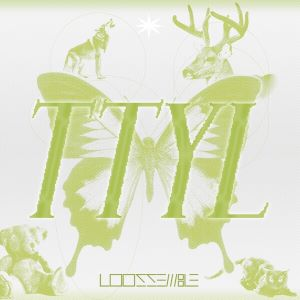
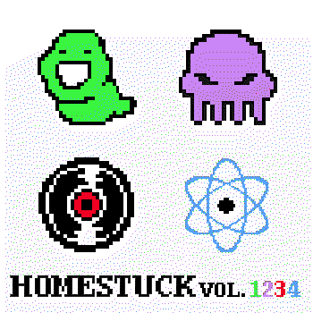
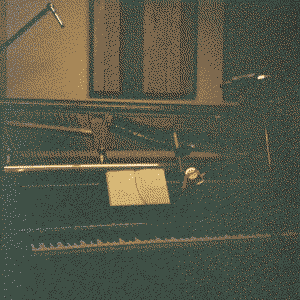
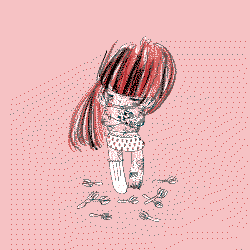

TTYL - loossemble
type: EP
genres: kpop, dancepop
date released: 2 september 2024
oh lord  i am so happy with this EP of theirs!
i am so happy with this EP of theirs!
when they first debuted with loossemble i was of course super happy for my girlies, but sadly the bsides didn't leave that much of an impression on me for me to warrant a visit to the EP in the future. it simply just wasn't was i was looking despite loving hearing them sing because of their distint voices.
i think with TTYL they finally hit the nail for me. because not only is the title track REALLY catchy and fun, but the rest of the bsides of this EP are very groovy and nice to listen to. i will always appreciate a kpop mini album that does not try to jam in there a ballad track.
listening to cotton candy and confessions back to back is a bit trippy tbh bc they are basically the same song. can't wait to see the mv for those two songs.
links: youtube playlist, spotify
highlights: TTYL, cotton candy, secret diary
rating: 

listened on 02.sep.24, published 02.sep.24
homestuck vol. 1-4 - various artists
type: compilation
genres: chiptune, soundtrack
date released: 24 october 2011
introductory mini rambling
SO...
every once in a while i go through my music files on my PC. i have the entirety of the homestuck soundtrack downloaded on my PC from when i was a wee young child. and every once in a while i also play some of these. because oh my fucking god??? SOME OF THIS SHIT FUCKING RULES!!!!!!!!!! so so many classics to revisit from these soundtrack albums... so i will be attemping to listened all the homestuck volumes. no promises though because i've actually never heard these albums in their entirety. or at least i really don't remember ever listening to them in full. but i have a ton of songs from the soundtrack that i love so i think this will be a fun thing to do!
is there nostalgia involved in this? probably. am i biased? maybe. but honestly who gives a fuck.
also this is probably obvious but yes, i was REALLY into homestuck when i was around 13 to 15 years old. it was crazy. i've read it 2 times so far. have not read any of homestuck 2 or whatever the hell is going on. i would honestly like to someday. but i'm a bit lazy when it comes to reading. especially when i'm not really sure if something is going to be worth my time. despite all of this, i still have a soft spot for homestuck in my heart. i think it is pretty common place to think of homestuck as the cringiest phase you could have in your teens. but i think i'm too old to care about what other strangers on the internet think. and also i think cringe is dead.
i hope all of this serves as a nice intro to my incoming listening homestuck soundtrack listening logs. i also want to put hsmusic.wiki here cus i think a fan wiki just for the music of homestuck is pretty awesome. anyways...
finally, my thoughts on vol. 1 - 4
we are off with the compilation of volumes 1 through 4. which was what was available through bandcamp at the time i downloaded it.
there a lot of hit and misses here. the ones that i Really enjoy were ones that i had already listened to, but there are some that i've never heard of and they really surprised me! i honestly don't remember that well if the rest of the soundtracks are this chiptune-y... we will see but for now i don't think so. so i think this is a very nice start to the webcomic as a whole, specially because during these acts in the webcomic everything was in that RPG looking ass format it was trying to mimic, and there wasn't that much going on. well. at least visually.
the song that made me want to do all of this in the first place was actually upward movement (dave owns) by kalibration. when i listened to this literally yesterday i got GOOSEBUMPS. this track has always been a long time favorite of mine. it is simply so catchy. i think the best thing was that i completely forgot about that gorgeous midi violins or whatever the fuck introduction it has. i am so sorry to the rest of the songs that also appear in this compilation, but upward movement has always been a winner in my heart. the fucking song progression is also so crazy good to me!!! ARE THOSE TRUMPETS??? probably not but whatever this song has going on... oh my god. it genuenly makes me so so so emotional to listen to. are those the voices of angels in the 2nd half of the song??? i'm sorry but this song just drives me a little bit insane.
three in the morning (RJ's i can barely sleep in this casino remix) by clark powell, remixed by robert j! lake, is another classic of mine. i remember i used to be REALLY into 8tracks such fucking simpler times... back in the day and i think i added this song to a jade harley playlist... idk but i've always been reminded of jade with this song despite this not being related to her. at all. just something about the "cutesy" sounds that sounds just like her. well all that aside, this is an excellent remix. i love how the piano of the original three in the morning is used in this. idk it just feels like this song has such a nice atmosphere to it. it's like really really cheery and happy while still being a bit soft you know?
one of my favorite songs composed by the legendary toby fox. of course his name was going to be mentioned here at some point. i think black on itself is quite honestly pretty fucking cool but i cannot lie that the splash that this song is featured in probably had a play in why i think i love this song so much. it's also another super catchy song.
i also completely forgot that jade is also kinda crazy with the bass because this is honestly sooo groovy. i love it. it's also made by the same person that did upward movement! how neat. this one is kinda new to me, because i simply just don't remember it despite appearing in a flash in the webcomic. verdancy (bassline) is also cool on its own but potential verdancy is definitely what brings everything together.
a hidden memory of mine is that i actually played (on my phone's speakers) aggrieve (violin refrain) in music class when i did a presentation on violins and this was my song of choice  i am crying as i type this.
i am crying as i type this.
highlights: upward movement (dave owns), three in the morning (RJ's i can barely sleep in this casino remix), black, beatdown round 2, potential verdancy, aggrieve (violin refrain), sburban jungle
rating: 

listened on 29.jul.24, published 30.jul.24
seabed eden (french version) - ichiko aoba & pomme
type: single
genres: chamber music
date released: 26 june 2024
i just had the most wonderful nap of my life listening to this song.
i really felt like that panel from our dreams at dusk. not even joking.
.jpg)
.jpg)
links: youtube
rating:
listened on 14.jul.24, published 15.jul.24
slash-&-burn - daoko
type: album
genres: jpop, electropop
date released: 22 may 2024
been looking forward to this one since it got announced! i've also been meaning to listen to her entire discography but... i have been forgetting...
anyways. listening to this album was sooooooo good. i really enjoyed the songs featured here. and of all releases of hers that i've listen to (SO FAR) it is my favorite. from what i've listened of her discography, i can see a bit of eveything she has worked with in this album.
first, let's get out of the way that i had been listening to the first track 天使がいたよ on repeat for the past 2 months. i was so surprised to hear a daoko song take more of a future house song!!!! i love future house so i really loved this song from the very first listen. it's so groovy. another song that has that kind of house groovi -ness to it is slump, but it is more bouncy than the previous one mentioned.
i've never been a big fan of hip hop songs but i love her vocals and the verses she does with her soft voice. なんちゃって is a very nice example of this which features some verses of her rapping with a lovely calming instrumental.
there's also some cutieful songs here such as 捨てちゃってね and novemberWeddingDay. they are so cute!!! what a joy was it to listen to them.
despite of me loving her soft vocals i'm also a big fan of how versatile she can sound like in gameover
there's a lot of variaty in terms of sounds in this album. but i definitely thing that it works wonders here. i might be biased. very biased. but i still find it a very cohesive album nonetheless. this was a joy to listen to. i really need to listen to her other stuff... but i'm not sure if anything might be able to top this.
highlights: 天使がいたよ, あぼーん (abon), slump, FTS, 捨てちゃってね
rating:
listened on 27.jun.24, published 03.jul.24